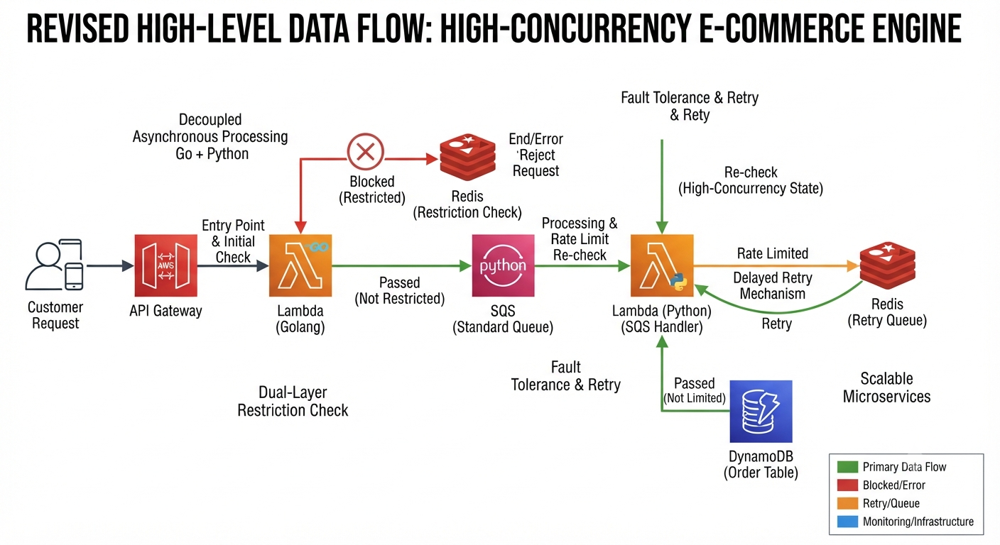

Author: Richard Fox | Status: Production Design & Implementation
This system utilizes a decoupled, event-driven architecture to mitigate database contention and handle traffic spikes. By separating the entry point (API Gateway) from processing (Workers), we ensure system availability even when backend services are under load.

Figure 1: Event-Driven Order Processing Pipeline
POST /order request.sqs:SendMessage action.| Failure Point | Symptom | Mitigation Strategy |
|---|---|---|
| Redis Down | Validation failure | Fail-Safe: Reject requests if cache is unreachable. |
| SQS Saturation | Queue depth limit | Backpressure: API Gateway returns HTTP 429 (Throttling). |
| Python Lambda Error | Execution crash | Retry Mechanism: Retries with exponential backoff; moves to DLQ after 3 failures. |
| DynamoDB Throttle | Write capacity limit | Jitter/Retry: Automatic AWS SDK retry logic. |
Purpose: Read-only access to Redis (VPC) and write access to SQS.
{
"Effect": "Allow",
"Action": ["sqs:SendMessage"],
"Resource": "arn:aws:sqs:region:account-id:OrderQueue"
}Purpose: Consume queue messages and persist order data.
{
"Effect": "Allow",
"Action": ["sqs:ReceiveMessage", "sqs:DeleteMessage"],
"Resource": "arn:aws:sqs:region:account-id:OrderQueue"
},
{
"Effect": "Allow",
"Action": ["dynamodb:PutItem"],
"Resource": "arn:aws:dynamodb:table/Orders"
}Input: {"user_id": "123", "item_id": "456"}
Result: Order persisted in DynamoDB (Status: PENDING).
Input: {"user_id": "BANNED_USER", "item_id": "456"}
Result: HTTP 403 Forbidden. The system never touches SQS/DynamoDB, protecting system throughput.
The project layout separates independent microservices from the centralized Terraform infrastructure configuration, managed via GitHub Actions automation.
ecommerce-security-pipeline/
├── .github/
│ └── workflows/
│ └── deploy.yml
├── services/
│ ├── ingress-api/ # Go-based API Ingress (Lambda Container)
│ │ ├── Dockerfile
│ │ └── main.go
│ └── worker-processor/ # Python-based SQS/Redis Worker (Lambda Container)
│ ├── Dockerfile
│ └── handler.py
└── terraform/
├── compute.tf # Lambda definitions & IAM bindings
├── database.tf # DynamoDB & ElastiCache Serverless Redis
├── networking.tf # VPC, Subnets, & SQS/DynamoDB VPC Endpoints
└── outputs.tf
ecommerce-lambda-v2 and sqs-redis-handler-v2). This isolates deployment lifecycles between the Go API gateway and the Python backend processor, preventing version collisions.us-east-1a and us-east-1b) to satisfy AWS compliance constraints for ElastiCache Serverless and multi-AZ VPC interface endpoints.